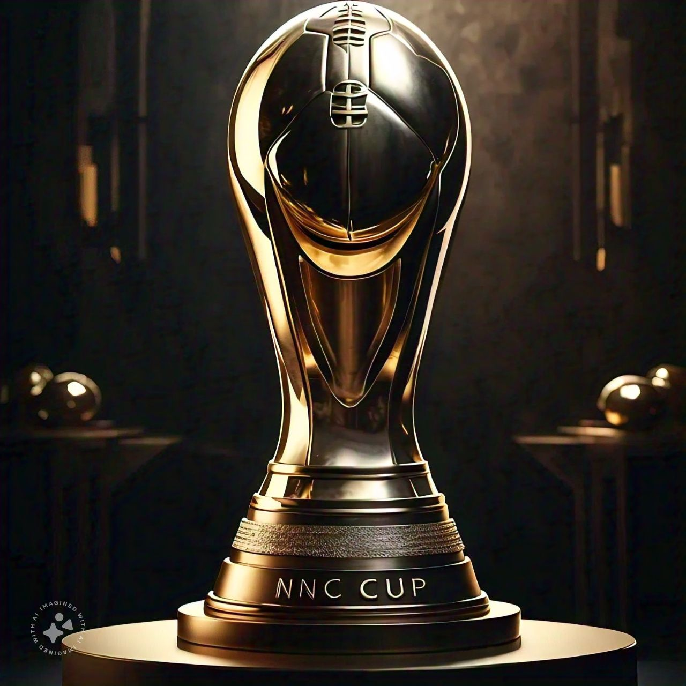
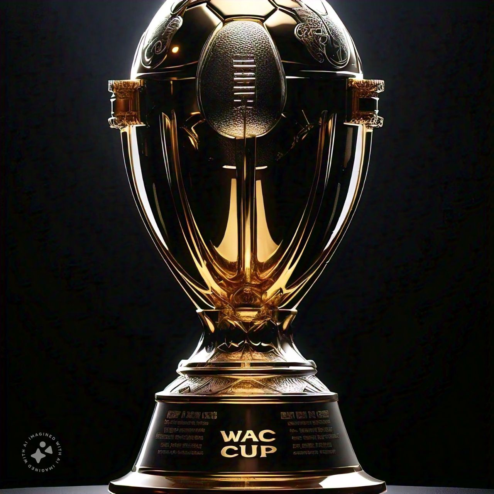

At AKTEN Academy, we are dedicated to helping young footballers achieve their dreams. Our mission is to provide a world-class training environment that fosters technical skill, tactical awareness, physical fitness, and mental toughness. We are passionate about developing confident, creative, and successful individuals who excel both on and off the pitch.
Founded in 2010, by Miss TRIUMPH, AKTEN Academy has grown from a small group of dedicated coaches and players into a thriving football community. Our journey has been marked by various achievements and we are recognised world-wide. Today, we are proud to be one of the leading football academies in the African continent, known for our commitment to excellence and player development.
1. Technical skill development: Mastering the fundamentals of football
2. Tactical awareness: Understanding the game and making informed decisions
3. Physical fitness : Building speed, agility, and endurance
4. Mental toughness: Cultivating resilience, focus, and teamwork
Our training programs are designed to challenge and engage players of all ages and skill levels. From grassroots development to elite performance, we offer a clear pathway for progression and success.
1. Mr. Nnamdi Kanu: He was a great Nigerian footballer who considers his stadium a palace, so he is been referred to as king Kanu by his team members. after his career, he vowed to create great footballers in Nigeria. He played football for Nigeria, and also played for his state. He was the best Nigerian Footballer in the 1990s.
2. Mr. Yakubu: He was also a contemporary footballer with Kanu, who was the best Nigerian Goalkeeper, he joined Kanu in Training future Nigerian footballers, along with Kanu, Mr. Yakubu also played football for Nigeria and also played the NPL [Nigeria Premier League], alike Kanu, Mr. Yakubu was also the best Goalkeeper in Nigeria in the 1990s.
- Three (3) grass pitches
- Five (5) artificial pitches
- Indoor training center
- Fitness and conditioning gym
- Video analysis technology
- Nigeria’s overall best team,
NNC {Northern Nigerian cup},

WAC {West-African cup}.

OUR NOTABLE PLAYERS
-KHALILULLAH : who is presently playing at REAL MADRID.
- EMMANUEL: played at LIVERPOOL and now in CHELSEA.
1. Respect: For teammates, opponents, coaches, and officials.
2. Discipline : In training, matches, and everyday life.
3. Teamwork: Collaboration and support for common goals.
4. Excellence : Striving for improvement and excellence in all aspects.